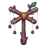
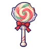

ปลาเทราต์กระโดด
มอนธาตุน้ำ Lv 20–27
เจอที่
| แมพ | โซน | Lv | ภูมิภาค |
|---|---|---|---|
| ต้นลำธาร | 20–25 | ป่ากองไฟ | |
| ลำธารซุงติด | 20–25 | ป่ากองไฟ | |
| ลำธารซุงติด | กองซุงติดลำธาร | 25–27 | ป่ากองไฟ |
| ถ้ำตาน้ำ | 20–25 | ป่ากองไฟ | |
| ถ้ำตาน้ำ | ปากถ้ำตาน้ำ | 25–27 | ป่ากองไฟ |
| หอรากมืด (Dark Root) | รากจมน้ำ | 43–52 |
ค่าสถานะตามเลเวล
| Lv | HP | ATK | DEF | MDEF | EXP | Job |
|---|---|---|---|---|---|---|
| 20 | 1,573 | 31–47 | 5 | 7 | 23 | 17 |
| 23 | 1,609 | 32–49 | 6 | 8 | 26 | 20 |
| 27 | 1,841 | 36–54 | 6 | 9 | 29 | 22 |
ตีด้วยธาตุไหนดี
แรงขึ้น: ลม ×1.75
เบาลง: ไฟ ×0.5 น้ำ ×0.25
วัตถุดิบที่ดรอป
| ของ | โอกาส | |
|---|---|---|
| เกล็ดเทราต์จุด | 55% | 1 ชิ้น (15% ได้ 2) |
อุปกรณ์ที่ดรอป (5)
| ของ | โอกาส |
|---|---|
 ไม้เชิดหุ่นกิ่งไม้ | 0.25% |
| เกราะเหล็กพิทักษ์ป่า (เกราะอก) | 0.15% |
| เกราะเหล็กพิทักษ์ป่า (สนับขา + รองเท้าเกราะ) | 0.15% |
 กระบองอมยิ้ม | 0.12% |
| เกราะเหล็กพิทักษ์ป่า (แหวนตราสน) | 0.05% |
สกิล
ยิงไกล (Lv 25+) · ยิงไกล (Lv 60+) · พ่น (Lv 60+)